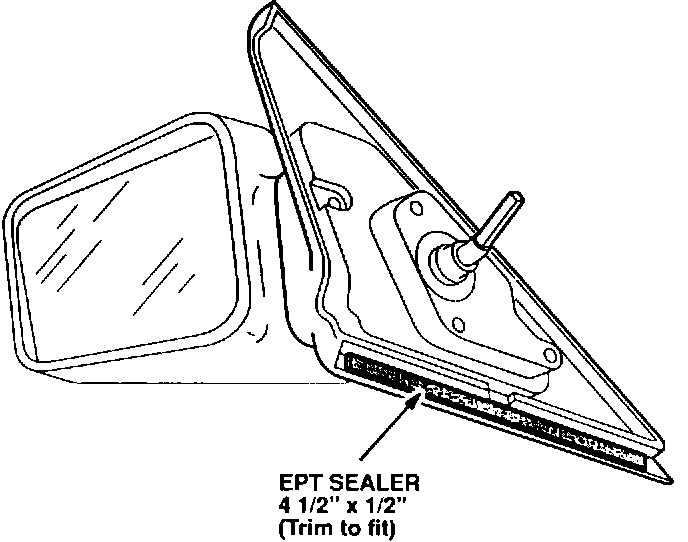

Side Mirror - Wind Noise
91acura02
April 22, 1991
BULLETIN NO.
91-023
YEAR MODEL VIN APPLICATION
1990-1991 INTEGRA ALL
Wind Noise from Side Mirror
SYMPTOM
Wind noise heard from either side mirror during highway driving.
PROBABLE CAUSE
Air entering the mirror assembly due to poor fit of the mirror assembly.

CORRECTIVE ACTION
1. Remove the mirror according to the appropriate service manual.
2. Cut a strip of EPT Sealer, 5T, 4-1/2 in. x 1/2 in. (trim if necessary for precise fit) and apply to the base of the mirror mounting.
3. Reinstall the mirror.
PARTS INFORMATION
EPT Sealer 5T P/N 06991-SA5-000
WARRANTY CLAIM INFORMATION
In warranty: The normal warranty applies.
Out-of-warranty: Any repair performed after warranty expiration may be eligible for goodwill consideration by the District Service Manager. You must request consideration, and get the DSM's decision, before starting work.
Use the following claim information if DSM approval is received.
Operation Flat Rate
Number Description Time
820050 Left 0.3 hrs.
- A With power mirrors add 0.1 hr.
821050 Right 0.3 hrs.
- A With power mirrors add 0.1 hr.
Failed P/N: 76250-SK8-A01
Defect code: 056
Contention code: B07